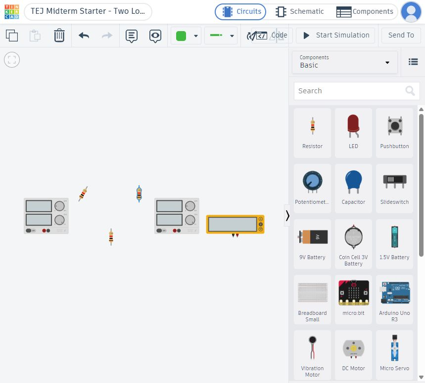
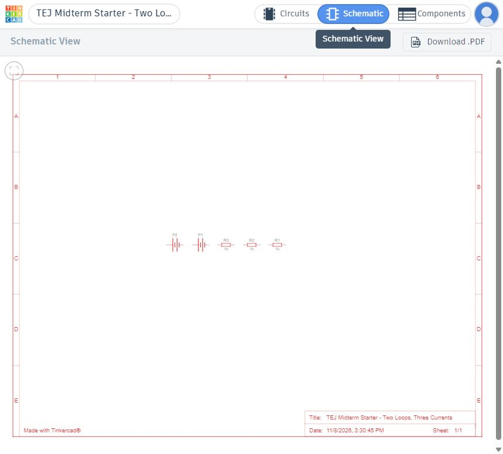

Build and Measure Circuits in Tinkercad
Learning goals
- I can place, set, wire, and simulate circuit components.
- I can connect a simulated meter for voltage, current, and resistance safely.
- I can compare a prediction with simulated evidence and investigate a mismatch.
Why this is useful
A simulator lets you test a model before using classroom parts. It can reveal a wiring error, but a matching result does not prove that the original model or real circuit is correct.
What you will make
You will reproduce one circuit from the course notes, measure it, and submit a circuit view plus a comparison table. Use the same labels and values as the source schematic.
Before you start
- Open Tinkercad Circuits in a current school-approved browser.
- Have your calculation and the matching circuit-analysis schematic ready.
- Use only simulated low-voltage direct-current circuits in this activity.
Tinkercad is an external Autodesk service. Availability, sign-in rules, and saved work depend on the school browser and account policy. If it is unavailable, use a teacher-approved physical build or another approved simulator and record which tool you used.
Your teacher may give you a class link or class code. A teacher can also create a lightweight class seat and assign a nickname that does not require personal information. Use only the nickname and joining method your teacher provides. Never place a class code in a public screenshot, notebook, or portfolio.
If you already use an approved account, open Your Classes, choose Join a Class, and enter the class code. The exact choices available depend on the teacher’s classroom setup. These routes follow Autodesk’s official classroom guide.
1. Create the circuit
- Open Circuits and choose Create new Circuit. Rename it with the teacher’s required filename pattern.
- Find each part in the components panel. Drag the source, resistors, breadboard if required, and Multimeter into the work area.
- Select each component and set its value and unit. Check
Ω,kΩ, volts, and source polarity before wiring. - Click one terminal, then the destination terminal, to draw a wire. Use clear wire routes and colour consistently. A wire that only crosses another wire is not automatically a junction.
- Trace the finished path from the positive source terminal back to the negative terminal. Compare every node with the course schematic.
This is an actual Tinkercad Circuits workspace. The incomplete starter contains the parts but does not give away the wiring.
Clicking a resistor opens the real settings panel. Type the number in Resistance and confirm the unit menu before wiring.

Use Schematic view to check the finished topology. The starter below is still unwired, so its components appear without connection lines. After you wire the circuit, the lines should match the source schematic.

Autodesk’s current Circuits overview confirms that the editor supports placing and wiring components, changing component values, starting a simulation, and using starter circuits. Follow its built-in Start Simulating, Editing Components, Wiring Components, and Ohm’s Law tutorials if a control has moved.
2. Simulate and measure
Choose Start Simulation. Stop the simulation before moving wires or changing values.
- Voltage: set the multimeter to voltage and place its probes across two nodes. This is a parallel connection.
- Current: open the branch and place the meter in the current path. This is a series connection. Never place an ammeter directly across a source.
- Resistance: stop the simulation and remove power before measuring across the part or equivalent network.
Record the sign as well as the magnitude. A negative voltage or current often means the probes or assumed direction are reversed; it is evidence to interpret, not a value to hide.
3. Compare the evidence
Use full precision for the calculation, then round the reported values to sensible significant figures.
| Quantity and location | Predicted | Simulated | Absolute difference | Percentage difference |
|---|---|---|---|---|
| Voltage (V) | ||||
| Current (mA) | ||||
| Resistance (Ω) | ||||
| Power (mW) |
Calculate absolute difference with
\[ \Delta x=\left|x_{\mathrm{simulated}}-x_{\mathrm{predicted}}\right|. \tag{1}\]
When the predicted reference is not zero, calculate
\[ \%\text{ difference}=\frac{\Delta x}{\left|x_{\mathrm{predicted}}\right|}\times 100\%. \tag{2}\]
If the predicted value is zero, percentage difference is undefined. Report the absolute difference and explain whether the simulated value is small enough for the purpose.
The problem
Your simulated measurement does not match your prediction closely enough to trust the result.
The essential skill: compare one node, one value, and one meter connection at a time.
The challenge: locate the cause, correct it, and preserve one screenshot or note showing what changed.
The stumbling block: a circuit can look similar while one wire ends in the wrong breadboard row, a resistor uses the wrong unit, or the ammeter bypasses a load.
The investigation: use Tinkercad’s built-in tutorials and search its component panel by the exact component name. Ask: What do you know, what do you need to find out, and how will you know when you are right?
Check whether the mismatch affects the whole circuit or only one branch. That tells you where to begin tracing.
Review Wiring Components, Editing Components, and Ohm’s Law from the official Tinkercad Circuits page. Search for the exact meter mode you need.
Stop the simulation. Confirm source polarity, resistor units, shared breadboard rows, and every meter connection. Restart and test one known node before rebuilding the circuit.
Check your work
- The simulated topology and labels match the source schematic.
- Component values include the correct units.
- Voltage is measured across two nodes; current is measured through a branch.
- Kirchhoff, series, or parallel checks pass within sensible rounding.
- The table identifies measurement locations, not just unnamed values.
Save and submit
Rename evidence as studentnumber-lastname-circuit-name.png and the comparison table as studentnumber-lastname-circuit-evidence.pdf or the format assigned by your teacher. Submit the files manually through the classroom system. Do not publish names, class codes, or identifiable student work.
Common issues
| Problem | Check |
|---|---|
| Simulation will not start | Look for a short circuit, unconnected terminal, impossible value, or editor warning. |
| Current reads zero | Confirm the branch is closed and the meter is inserted in series. |
| Voltage has a negative sign | Swap the probes or explain that the actual polarity opposes the assumed polarity. |
| Result is off by 1000 | Check Ω versus kΩ, and A versus mA. |
| Real behaviour is missing | Tinkercad uses component models. Record the limitation and use teacher-approved hardware or a more suitable simulator when the model cannot represent the needed behaviour. |
Help improve this lesson (optional)
- Which step or screenshot was unclear?
- What do you still not know how to do?
- What one change would make this easier for the next student?
Useful fixes may be added to the course materials and credited. This feedback is optional and is not part of the technical mark.
Continue with the matching series, parallel, series-parallel, or Kirchhoff investigation, then use the computational engineering notebooks when Python adds useful verification.